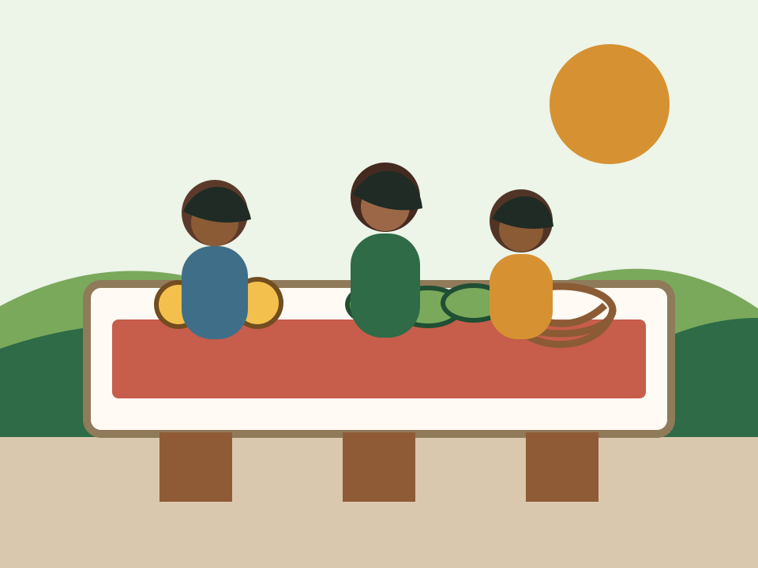
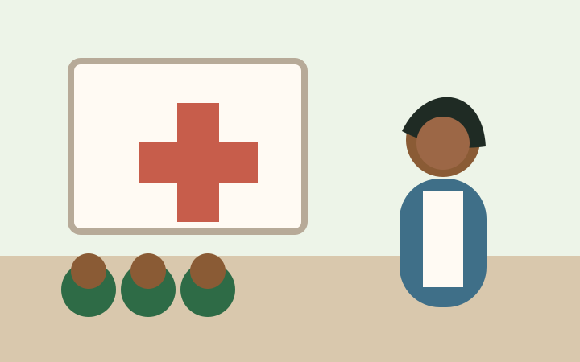

Agriculture products
Beans, maize flour, cassava, sweet potatoes, matooke, vegetables, fruits, and seasonal produce for household buyers and retailers.
CI-08 agricultureIA-Products/Agriculture
Registered community-based women's organization
A Mukono District cooperative helping 47 women sell farm produce and handcrafts while sharing practical monthly health awareness with the community.

Products
The inventory grouped the notebook's 23 products into agriculture and handcraft categories so customers do not scroll through one long mixed list.
Beans, maize flour, cassava, sweet potatoes, matooke, vegetables, fruits, and seasonal produce for household buyers and retailers.

Woven baskets, mats, table pieces, bags, beadwork, and gift items made by cooperative members.
About
The About page turns the mission/history document into a short trust-building story for customers, donors, partners, and the grant committee.
Health Awareness
Health content is separated from product selling because the inventory identified health workers and monthly tips as a distinct community service.

Clean water, handwashing, and safe food handling during market days and home preparation.